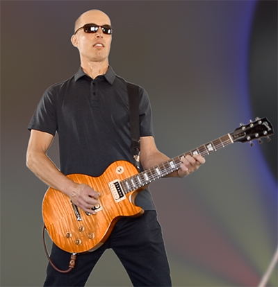

|
Ari Flink
 Early Years:
Ari was born in Kemi, Finland (60 miles south of the Arctic Circle - where nights are only 15 minutes in June and home of the world’s largest ‘snow fort’ (pic) and in view of the Northern Lights. This may explain why Ari wears sunglasses to bed.
Music Life:
His uncle was the inspiration that got him to start playing guitar at 15.
Ari played in various bands over the years.
Ari is truly a Scandanavian eclectic. He played - as the token Scandanavian - in a Bay Area Taiwanese rock/pop band ("Idea Band"). But, he also played in several bay area bands while trying to figure what Idea Band members where saying about him.
Professional Life:
After high school Ari studied electrical engineering and worked his entire career in high tech as a programmer and IT systems architect.
Ari worked (as a software architect) with Steve at eBay for several years.
There he became aware of the solo productions Steve (Mansour) was doing from home.
He subsequently invited Steve to play in a band with him and Mikaels at a summer event (Solstice). After that experience they got more serious. Ari set up an advanced monitoring system. With Mikael on bass they began to develop more sophisticated arrangements, harmonies, and used Ableton Live to control some aspects of their live performances.
Turn Ons:
Turn Ons:
Daylight. Walks in the rain. Watching the sunset with his pet narwhal. Eating sushi in Mexican restaurants.
Turn Offs:
Fakers, haters, space invaders, paint vapors, craters & rude waiters.
|